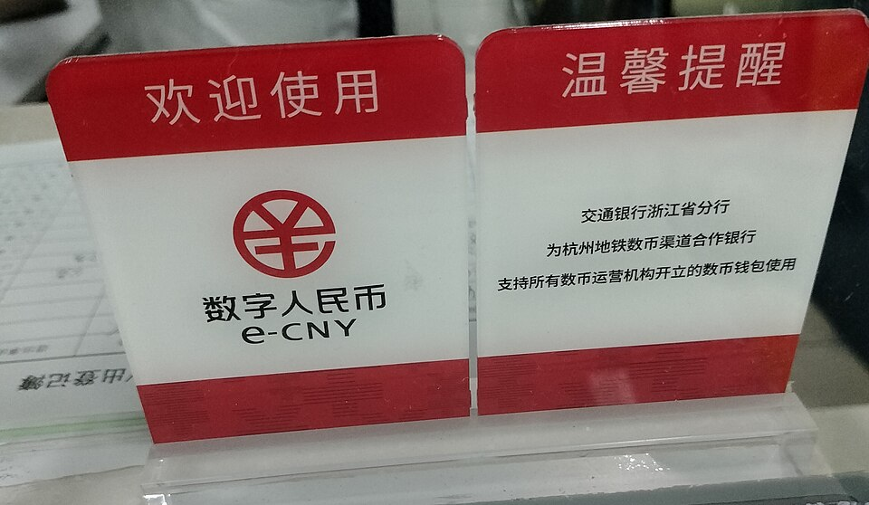

What Makes CBDCs Categorically Different
Cash is anonymous. Bank transfers are traceable. Cryptocurrencies are pseudonymous. CBDCs are none of these — they are fully identified, fully traceable digital tokens issued directly by a central bank and held in accounts directly at that central bank (or government-designated institution). There is no commercial bank as intermediary. There is no cash alternative. Every unit of CBDC is a direct liability of the issuing central bank and carries whatever programmatic conditions that bank — or its government controller — chooses to embed in it.
The programmability of CBDCs means money can be configured to: (1) expire after a set date (forcing consumption, preventing savings); (2) be restricted by category (you can only spend this on approved goods); (3) be triggered by compliance conditions (your social credit score, your vaccination status, your carbon footprint); (4) be cancelled instantly for any designated reason; and (5) be taxed at the point of spending at rates set in real time. These are not theoretical capabilities — they are explicit design features being tested in existing CBDC pilots.
The Global Rollout
Nigeria's eNaira (2021)
One of the first nationally deployed CBDCs. Adoption was forced by withdrawing large denomination cash from circulation. Within a year of launch, the CBN imposed withdrawal limits on physical cash to drive eNaira adoption. The strategy: create the digital system, then remove the non-digital alternative.
China's Digital Yuan (e-CNY)
Piloted in major cities since 2020. Built-in expiry dates to stimulate spending have been tested. The system is integrated with the existing social credit infrastructure. Citizens who spend digital yuan on approved political activities receive benefits; those with poor social credit scores find their spending capabilities restricted.
Bahamas Sand Dollar (2020)
First fully deployed national CBDC. Limited rollout, but established the regulatory and technical template for subsequent deployments. BIS used Bahamas as a case study for CBDC implementation guidance distributed to member central banks globally.
Digital Euro (In Development)
The ECB is in the "preparation phase" for the digital euro. The ECB's draft privacy documents confirm the digital euro will be traceable for transactions above a minimum threshold. The EU Council's draft regulation includes provisions for spending category restrictions "in cases of emergency."
The Stated Goals vs. The Real Goals
CBDCs are sold as: (1) financial inclusion for the unbanked; (2) more efficient cross-border payments; (3) reduced money laundering risk; (4) better monetary policy transmission. The real function is financial totalitarianism: the elimination of economic privacy, the end of physical cash as an alternative, and the creation of a monetary system in which individual economic autonomy can be revoked at the state's discretion. Every stated benefit is achievable through existing digital payment infrastructure without creating a central bank-issued programmable token.
CBDCs only achieve full control when cash is eliminated. The war on cash has been underway for 15 years: cash payment limits imposed by law in France (€1,000), Italy (€999), Belgium (€3,000), Spain (€1,000); India's 2016 demonetisation (500 and 1,000 rupee notes declared illegal overnight); Sweden's near-cashless society (cash accepted by less than 20% of retailers). Each of these creates the conditions for CBDC adoption by eliminating the privacy-preserving alternative.
CBDC and the Great Reset
The WEF's Great Reset explicitly calls for a "reset" of the global financial system — of which CBDC is the monetary pillar. A globally interoperable CBDC system (which the BIS Innovation Hub is building) would allow coordinated global monetary policy, cross-border social credit integration, and the elimination of dollar-denominated financial freedom for citizens of any participating nation. (See: The Great Reset)
NESARA and the Alternative
The Q-aligned research community proposes NESARA/GESARA as the counter-CBDC — a return to asset-backed currency, debt jubilee, and elimination of the fractional reserve banking system entirely. In this framework, the white hat operation is racing to implement NESARA before the CBDC system achieves irreversible global deployment. (See: NESARA/GESARA)